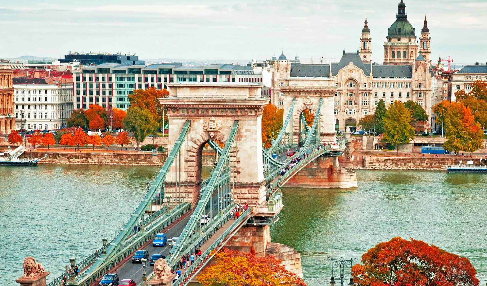

Місце народження: 21 липня, 2002 року, м. Київ
Освіта: Загольноосвітня школа I-III ступенів №6, м. Васильків
НТУУ "КПІ", м. Київ
Хоббі:
Улюблені книги:
Будапе́шт (угор. Budapest) — місто на Дунаї, столиця Угорщини. 1873 року міста Пешт, яке лежало на східному боці річки Дунай, Буда (лат. Buda) і Обуда (угор. Obuda, обидва — на західному боці річки) було об'єднано в одне місто під назвою Будапешт.
